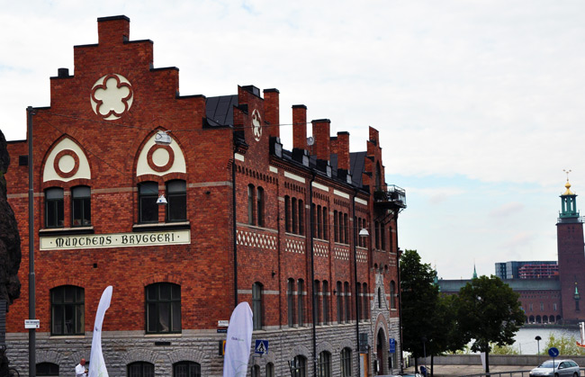

- Conference Venue
- Tutorials Venue
- Erlang University Venue
- Getting to Stockholm
- Public Transport in Stockholm
Conference Venue
This year, the Erlang User Conference will be held in a brand new location – the exciting, spacious building of the Munchen Bryggeriet. This old building has been a characteristic part of the Stockholm skyline for over 100 years and until 1971 was used as a brewery. Since then, however, the venue has undergone fantastic refits and has seen the building transformed from the historic industrial space of the past into the bright and modern conferencing venue that you see today – marrying the old and the new to create a truly unique experience.

The venue itself is located
Mälarsalen AB
Torkel Knutssonsgatan 2
Box 170 60,
104 62 Stockholm
Sweden
The nearest metro is Zinkensdamm T-bana
A downloadable map is available here
Tutorial and Hackathon Venue
The tutorials will be held at:
Ericsson
Kistavägen 25,
164 40 Kista
Stockholm
Sweden
The nearest metro is Kista T-bana
A downloadable map is available here
A more detailed map is available here
University Courses Venue
The venue for the University courses will be:
Business Center Bilpalatset
S:t Eriksgatan 117 C, 7 tr
113 43
Stockholm
The nearest metro is S:T Eriksplan
A downloadable map is available here
Getting to Stockholm
There are four airports within range of Stockholm.
Arlanda is the main airport, the major airlines fly there. You can get from Arlanda to Stockholm Central Railway station by:
- Arlanda Express. Leaves every 15 minutes, takes about 25 minutes, costs 200 SEK (100 if you're under 26!). Comfortable but expensive.
- Flygbuss. Leaves every 10 or 15 minutes, takes about 45 minutes, costs 95 sek.
- Taxi. Won't save you any time, but it will cost more. The taxi company "Taxi Stockholm" has fixed prices to and from the airport, but make sure you ask for "fixed price". The fixed price for Arlanda to Stockholm City is 445 SEK. Stockholm City to Arlanda costs 475 SEK.
Bromma Airport is used mainly for domestic flights. There's a Flygbuss (20 minutes, 70 SEK) and also normal public transport, e.g. you can take bus 152 to the station.
Skavsta and Västerås are two "budget" airports used by Ryanair, e.g. there are several flights to and from London (Stansted/Luton) every day. Take the Flygbuss to town, it's the only sensible option. They leave whenever a flight arrives.
Public Transport in Stockholm
Stockholm is not a good place to get around by car.
Public transport is excellent, though not cheap. There's a great webpage with timetables, maps and information. The buses, trains and subway all use the same tickets, some of the options are:
- Cash at the ticket booth in every subway station. Costs 20SEK per ticket. You will need differing numbers of tickets according to which zones you will be moving between. Note: You need two tickets for travelling in one zone.
- From a vending machine at the stations. These are priced according to the number of zones you are travelling in.
- Buy a booklet of 16 tickets ("rabatthäfte") for 180SEK. Available at the ticket booth in any subway station, or at any "Pressbyrån" shop.
- A 7-day pass costs 260SEK. A 72 hour pass costs 200SEK. A 24 hour pass costs 100SEK. Available at "Pressbyrån" shops and the ticket offices at large subway stations.
You might also check the Tourist Information. (Tip: the dots above the letters in station names such as Älvsjö are crucial, the trip planner won't give you the right stations if you leave them out, but it does, eventually, give you some buttons you can click to get those letters if your keyboard doesn't have them. Alternatively, cut and paste the name from this page.)